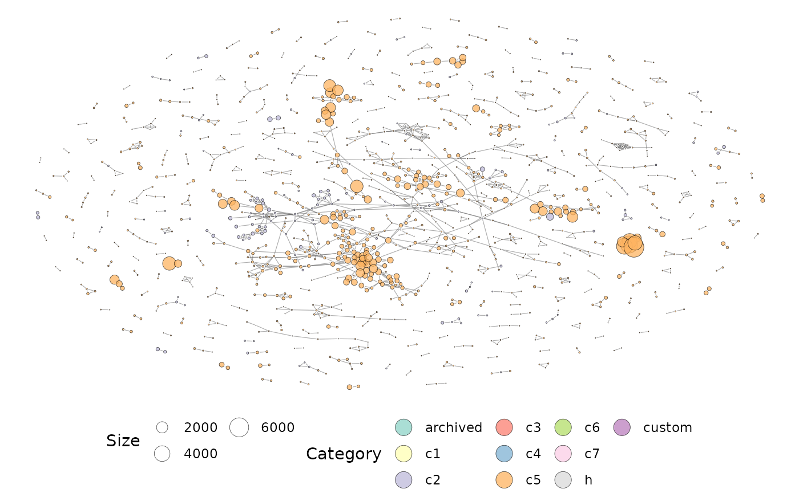
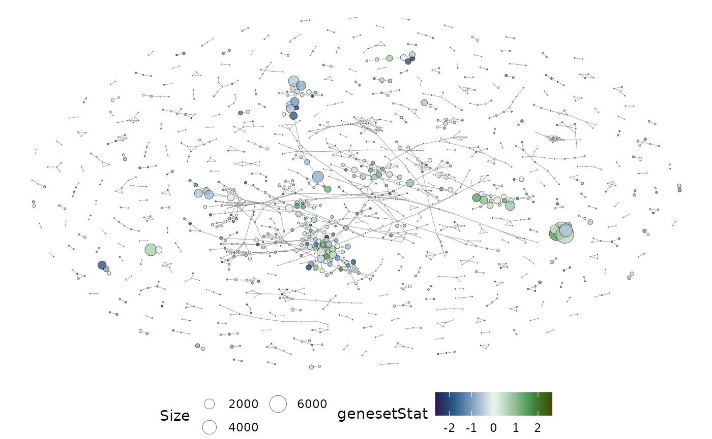
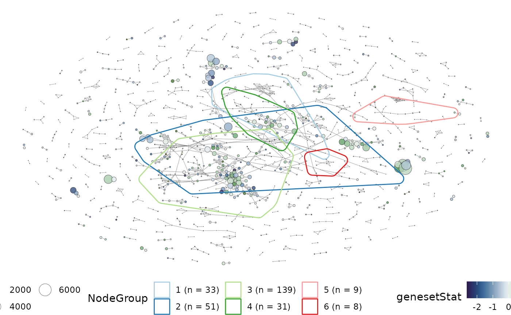
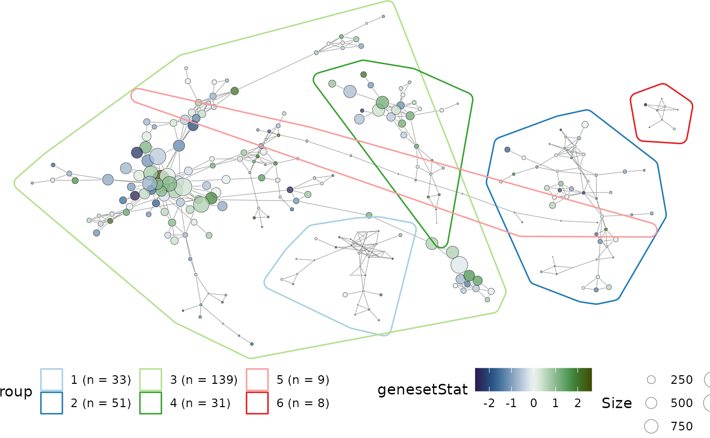
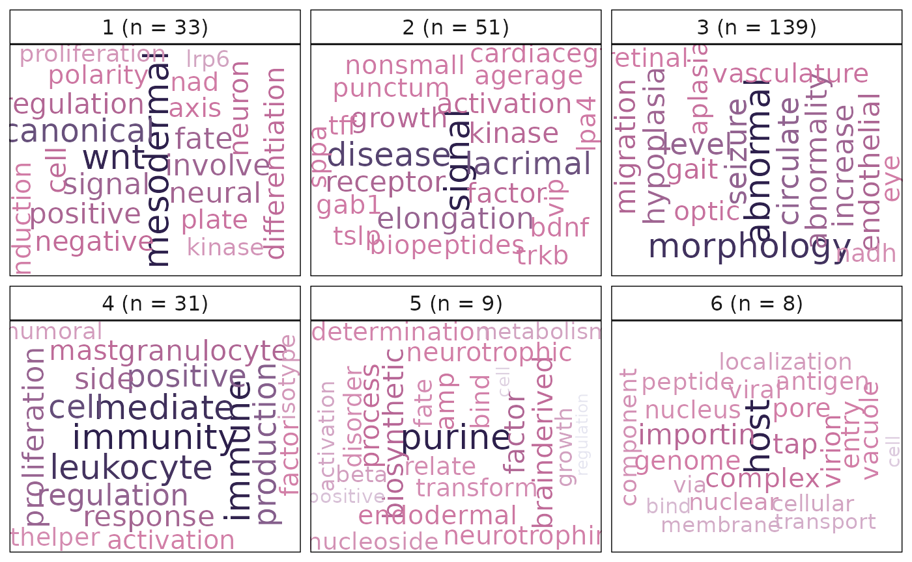
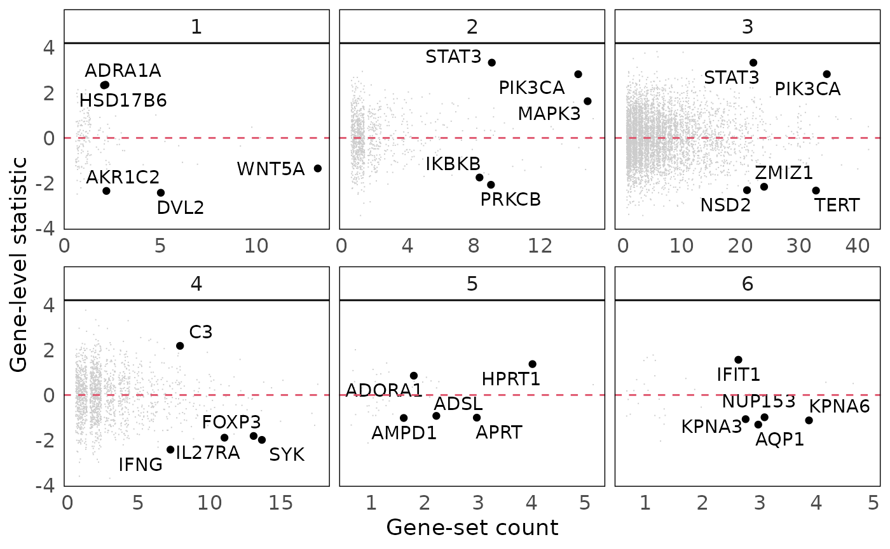

vissE: Visualising Set Enrichment Analysis Results.
Dharmesh D. Bhuva
19 August 2021
Source:vignettes/vissE.Rmd
vissE.RmdAbstract
This package enables the interpretation and analysis of results from a gene set enrichment analysis using network-based and text-mining approaches. Most enrichment analyses result in large lists of significant gene sets that are difficult to interpret. Tools in this package help build a similarity-based network of significant gene sets from a gene set enrichment analysis that can then be investigated for their biological function using text-mining approaches.
vissE
This package implements the vissE algorithm to summarise results of gene-set analyses. Usually, the results of a gene-set enrichment analysis (e.g using limma::fry, singscore or GSEA) consist of a long list of gene-sets. Biologists then have to search through these lists to determines emerging themes to explain the altered biological processes. This task can be labour intensive therefore we need solutions to summarise large sets of results from such analyses.
This package provides an approach to provide summaries of results from gene-set enrichment analyses. It exploits the relatedness between gene-sets and the inherent hierarchical structure that may exist in pathway databases and gene ontologies to cluster results. For each cluster of gene-sets vissE identifies, it performs text-mining to automate characterisation of biological functions and processes represented by the cluster.
An additional power of vissE is to perform a novel type of gene-set enrichment analysis based on the network of similarity between gene-sets. Given a list of genes (e.g. from a DE analysis), vissE can characterise said list by first identifying all other gene-sets that are similar to it, following up with clustering the resulting gene-sets and finally performing text-mining to reveal emerging themes.
In addition to these analyses, it provides visualisations to assist the users in understanding the results of their experiment. This document will demonstrate these functions across the two use-cases. The vissE package can be downloaded as follows:
if (!requireNamespace("BiocManager", quietly = TRUE))
install.packages("BiocManager")
BiocManager::install("vissE")Summarising the results of a gene-set enrichment analysis
Often, the results of a gene-set enrichment analysis (be it an over representation analysis of a functional class scoring approach) is a list of gene-sets that are accompanied by their statistics and p-values or false discovery rates (FDR). These results are mostly scanned through by biologists who then extract relevant themes pertaining to the experiment of interest. The approach here, vissE, will allow automated extraction of themes.
The example below can be used with the results of any enrichment analysis. The data below is simulated to demonstrate the workflow.
library(msigdb)
library(GSEABase)
#load the MSigDB from the msigdb package
msigdb_hs = getMsigdb()
#append KEGG gene-sets
msigdb_hs = appendKEGG(msigdb_hs)
#select h, c2, and c5 collections (recommended)
msigdb_hs = subsetCollection(msigdb_hs, c('h', 'c2', 'c5'))
#randomly sample gene-sets to simulate the results of an enrichment analysis
set.seed(360)
geneset_res = sample(sapply(msigdb_hs, setName), 2500)
#create a GeneSetCollection using the gene-set analysis results
geneset_gsc = msigdb_hs[geneset_res]
geneset_gsc
#> GeneSetCollection
#> names: GO_CARBOHYDRATE_TRANSPORT, GO_NEURON_DEVELOPMENT, ..., KARLSSON_TGFB1_TARGETS_DN (2500 total)
#> unique identifiers: OCLN, SLC35B1, ..., TLCD3A (18844 total)
#> types in collection:
#> geneIdType: SymbolIdentifier (1 total)
#> collectionType: BroadCollection (1 total)A vissE analysis involves 3 steps:
- Compute gene-set overlaps and the gene-set overlap network
- Identify clusters of gene-sets based on their overlap
- Characterise clusters using text mining
- (Optional) Visualise gene-level statistics
Compute gene-set overlap
The default approach to computing overlaps is using the Jaccard index. Overlap is computed based on the gene overlap between gene-sets. Alternatively, the overlap coefficient can be used. The latter can be used to highlight hierarchical overlaps (such as those present in the gene ontology).
library(vissE)
#compute gene-set overlap
gs_ovlap = computeMsigOverlap(geneset_gsc, thresh = 0.25)
#create an overlap network
gs_ovnet = computeMsigNetwork(gs_ovlap, msigdb_hs)
#plot the network
set.seed(36) #set seed for reproducible layout
plotMsigNetwork(gs_ovnet)
The overlap network plot above is annotated using the MSigDB category. If gene-set statistics are available, they can be projected onto the network too. Gene-set statistics can be passed onto the plotting function as a named vector.
#simulate gene-set statistics
geneset_stats = rnorm(2500)
names(geneset_stats) = geneset_res
head(geneset_stats)
#> GO_CARBOHYDRATE_TRANSPORT
#> -1.9008283
#> GO_NEURON_DEVELOPMENT
#> 0.7106184
#> SOTIRIOU_BREAST_CANCER_GRADE_1_VS_3_UP
#> -0.5727491
#> GO_POSITIVE_REGULATION_OF_LONG_TERM_SYNAPTIC_DEPRESSION
#> -0.6548686
#> SHIPP_DLBCL_CURED_VS_FATAL_UP
#> 1.3053294
#> HP_PTERYGIUM
#> -0.1599839
#plot the network and overlay gene-set statistics
set.seed(36) #set seed for reproducible layout
plotMsigNetwork(gs_ovnet, genesetStat = geneset_stats)
Identify clusters of gene-sets
Related gene-sets likely represent related processes. The next step is to identify clusters of gene-sets so that they can be assessed for biological themes. The specific clustering approach can be selected by the user though we recommend graph clustering approaches to use the information provided in the overlap graph. We recommend using the igraph::cluster_walktrap() algorithm as it works well with dense graphs. Many other algorithms are implemented in the igraph package and these can be used instead of the walktrap algorithm.
library(igraph)
#identify clusters
grps = cluster_walktrap(gs_ovnet)
#extract clustering results
grps = groups(grps)
#sort by cluster size
grps = grps[order(sapply(grps, length), decreasing = TRUE)]
#plot the top 12 clusters
set.seed(36) #set seed for reproducible layout
plotMsigNetwork(gs_ovnet, markGroups = grps[1:6], genesetStat = geneset_stats)
Characterise gene-set clusters
Gene-set clusters identified can be assessed for their biological similarities using text-mining approaches. Here, we perform a frequency analysis (adjusted for using the inverse document frequency) on the gene-set names or their short descriptions to assess recurring biological themes in clusters. These results are then presented as word clouds.
#compute and plot the results of text-mining
#using gene-set Names
plotMsigWordcloud(msigdb_hs, grps[1:6], type = 'Name')
#using gene-set Short descriptions
plotMsigWordcloud(msigdb_hs, grps[1:6], type = 'Short')
Visualise gene-level statistics for gene-set clusters
Gene-level statistics for each gene-set cluster can be visualised to better understand the genes contributing to significance of gene-sets. Gene-level statistics can be passed onto the plotting function as a named vector. A jitter is applied on the x-axis (due to its discrete nature).
library(ggplot2)
#simulate gene-set statistics
set.seed(36)
genes = unique(unlist(geneIds(geneset_gsc)))
gene_stats = rnorm(length(genes))
names(gene_stats) = genes
head(gene_stats)
#> OCLN SLC35B1 SLC35A1 SORBS1 ARPP19 SLC35D2
#> 0.3117314 0.8498291 0.7055331 1.6999284 -1.3455710 -0.5698134
#plot the gene-level statistics
plotGeneStats(gene_stats, msigdb_hs, grps[1:6]) +
geom_hline(yintercept = 0, colour = 2, lty = 2)
Combine results to interpret results
Results of a vissE analysis are best presented and interpreted as paneled plots that combine all of the above plots. This allows for collective interpretation of the gene-set clusters.
library(patchwork)
#create independent plots
set.seed(36) #set seed for reproducible layout
p1 = plotMsigWordcloud(msigdb_hs, grps[1:6], type = 'Name')
p2 = plotMsigNetwork(gs_ovnet, markGroups = grps[1:6], genesetStat = geneset_stats)
p3 = plotGeneStats(gene_stats, msigdb_hs, grps[1:6]) +
geom_hline(yintercept = 0, colour = 2, lty = 2)
#combine using functions from ggpubr
p1 + p2 + p3
Session information
sessionInfo()
#> R version 4.1.0 (2021-05-18)
#> Platform: x86_64-pc-linux-gnu (64-bit)
#> Running under: Ubuntu 20.04.2 LTS
#>
#> Matrix products: default
#> BLAS/LAPACK: /usr/lib/x86_64-linux-gnu/openblas-pthread/libopenblasp-r0.3.8.so
#>
#> locale:
#> [1] LC_CTYPE=en_US.UTF-8 LC_NUMERIC=C
#> [3] LC_TIME=en_US.UTF-8 LC_COLLATE=en_US.UTF-8
#> [5] LC_MONETARY=en_US.UTF-8 LC_MESSAGES=C
#> [7] LC_PAPER=en_US.UTF-8 LC_NAME=C
#> [9] LC_ADDRESS=C LC_TELEPHONE=C
#> [11] LC_MEASUREMENT=en_US.UTF-8 LC_IDENTIFICATION=C
#>
#> attached base packages:
#> [1] stats4 stats graphics grDevices utils datasets methods
#> [8] base
#>
#> other attached packages:
#> [1] patchwork_1.1.1 ggplot2_3.3.5 igraph_1.2.6
#> [4] vissE_1.1.1 GSEABase_1.55.1 graph_1.71.2
#> [7] annotate_1.71.0 XML_3.99-0.6 AnnotationDbi_1.55.1
#> [10] IRanges_2.27.0 S4Vectors_0.31.0 Biobase_2.53.0
#> [13] BiocGenerics_0.39.1 msigdb_1.1.0
#>
#> loaded via a namespace (and not attached):
#> [1] AnnotationHub_3.1.5 BiocFileCache_2.1.1
#> [3] systemfonts_1.0.2 plyr_1.8.6
#> [5] GenomeInfoDb_1.29.3 digest_0.6.27
#> [7] htmltools_0.5.1.1 viridis_0.6.1
#> [9] fansi_0.5.0 magrittr_2.0.1
#> [11] memoise_2.0.0 tm_0.7-8
#> [13] Biostrings_2.61.2 graphlayouts_0.7.1
#> [15] textshape_1.7.3 pkgdown_1.6.1.9001
#> [17] colorspace_2.0-2 blob_1.2.2
#> [19] rappdirs_0.3.3 ggrepel_0.9.1
#> [21] sylly_0.1-6 textshaping_0.3.5
#> [23] xfun_0.25 dplyr_1.0.7
#> [25] crayon_1.4.1 RCurl_1.98-1.3
#> [27] jsonlite_1.7.2 glue_1.4.2
#> [29] polyclip_1.10-0 gtable_0.3.0
#> [31] zlibbioc_1.39.0 XVector_0.33.0
#> [33] scico_1.2.0 scales_1.1.1
#> [35] DBI_1.1.1 qdapRegex_0.7.2
#> [37] Rcpp_1.0.7 viridisLite_0.4.0
#> [39] xtable_1.8-4 bit_4.0.4
#> [41] textclean_0.9.3 httr_1.4.2
#> [43] RColorBrewer_1.1-2 ggwordcloud_0.5.0
#> [45] ellipsis_0.3.2 pkgconfig_2.0.3
#> [47] farver_2.1.0 sass_0.4.0
#> [49] dbplyr_2.1.1 utf8_1.2.2
#> [51] tidyselect_1.1.1 labeling_0.4.2
#> [53] rlang_0.4.11 reshape2_1.4.4
#> [55] later_1.2.0 munsell_0.5.0
#> [57] BiocVersion_3.14.0 tools_4.1.0
#> [59] cachem_1.0.5 generics_0.1.0
#> [61] RSQLite_2.2.7 ExperimentHub_2.1.4
#> [63] evaluate_0.14 stringr_1.4.0
#> [65] fastmap_1.1.0 yaml_2.2.1
#> [67] ragg_1.1.3 textstem_0.1.4
#> [69] org.Hs.eg.db_3.13.0 knitr_1.33
#> [71] bit64_4.0.5 fs_1.5.0
#> [73] tidygraph_1.2.0 purrr_0.3.4
#> [75] KEGGREST_1.33.0 ggraph_2.0.5
#> [77] koRpus_0.13-8 mime_0.11
#> [79] slam_0.1-48 xml2_1.3.2
#> [81] BiocStyle_2.21.3 compiler_4.1.0
#> [83] filelock_1.0.2 curl_4.3.2
#> [85] png_0.1-7 interactiveDisplayBase_1.31.2
#> [87] koRpus.lang.en_0.1-4 syuzhet_1.0.6
#> [89] tibble_3.1.3 tweenr_1.0.2
#> [91] bslib_0.2.5.1 stringi_1.7.3
#> [93] highr_0.9 desc_1.3.0
#> [95] lattice_0.20-44 Matrix_1.3-4
#> [97] vctrs_0.3.8 pillar_1.6.2
#> [99] lifecycle_1.0.0 BiocManager_1.30.16
#> [101] jquerylib_0.1.4 data.table_1.14.0
#> [103] bitops_1.0-7 httpuv_1.6.1
#> [105] sylly.en_0.1-3 R6_2.5.0
#> [107] promises_1.2.0.1 gridExtra_2.3
#> [109] lexicon_1.2.1 MASS_7.3-54
#> [111] assertthat_0.2.1 rprojroot_2.0.2
#> [113] withr_2.4.2 GenomeInfoDbData_1.2.6
#> [115] parallel_4.1.0 grid_4.1.0
#> [117] prettydoc_0.4.1 tidyr_1.1.3
#> [119] rmarkdown_2.10 ggforce_0.3.3
#> [121] NLP_0.2-1 shiny_1.6.0